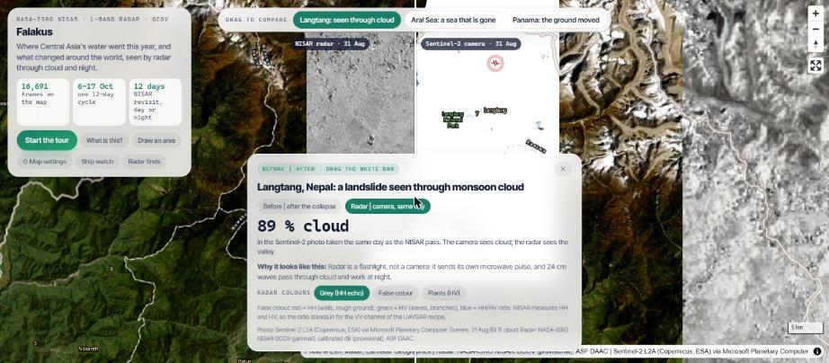
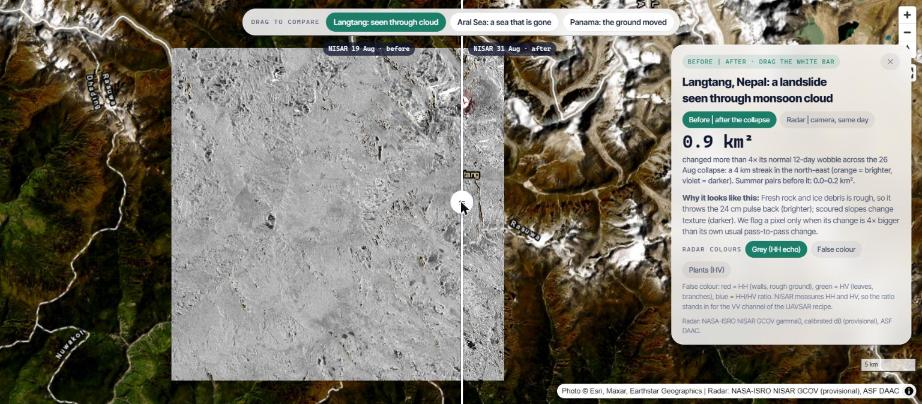
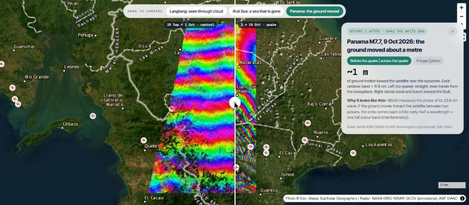
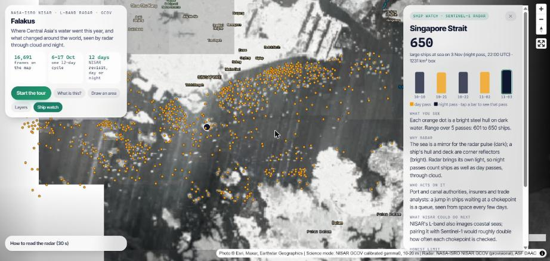
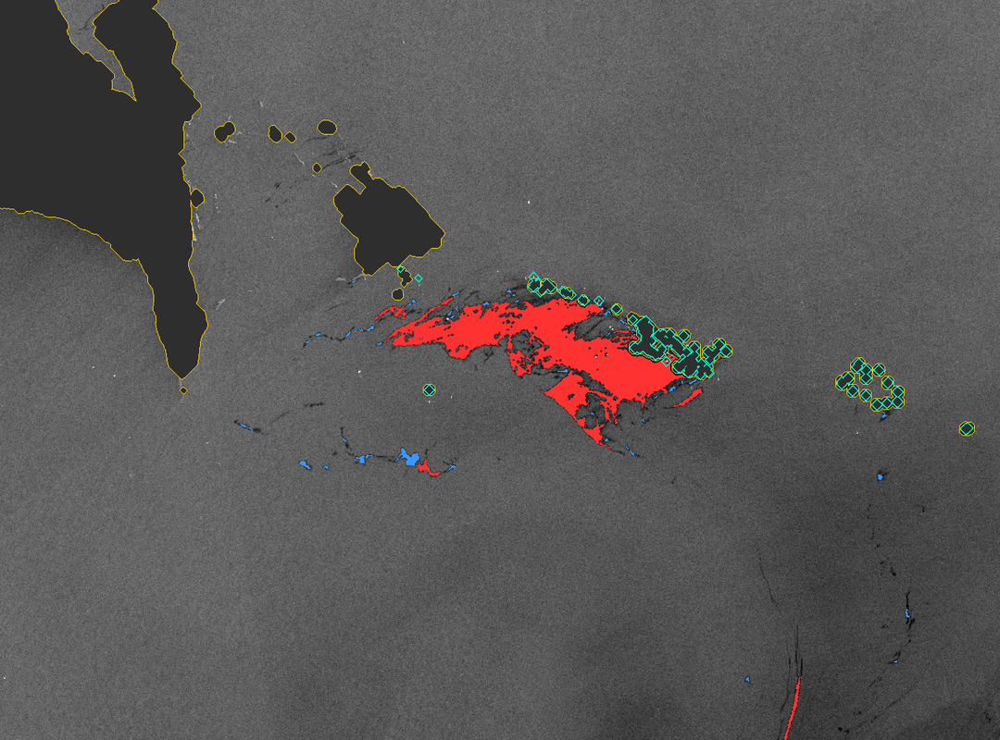
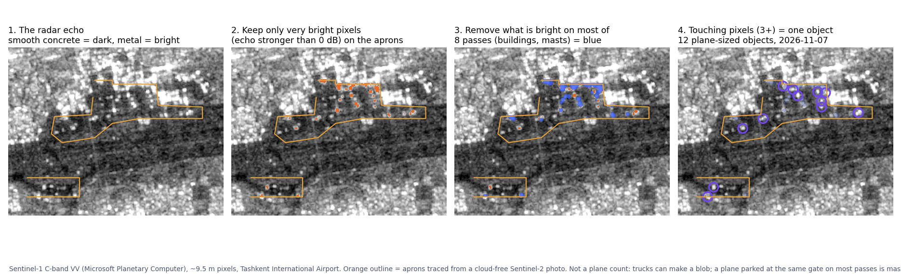
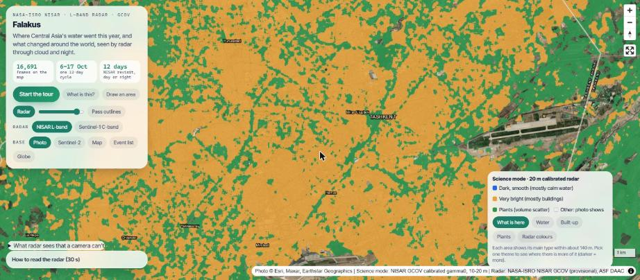

<title>PAGEL Jarvis Audit</title>
<link rel="preconnect" href="https://fonts.googleapis.com">
<link rel="stylesheet" href="https://fonts.googleapis.com/css2?family=Inter+Tight:wght@400;500;600;800&display=swap">
<style>
.shot{border-radius:18px;overflow:hidden;box-shadow:0 14px 34px -18px rgba(15,22,48,.45);border:1px solid rgba(255,255,255,.9);background:#fff}
.shot img{display:block;width:100%;height:100%;object-fit:cover}
.cap{font:400 11px/1.4 var(--mono);color:var(--ink-3);margin-top:8px}
.tile{padding:14px;border-radius:20px;display:grid;grid-template-rows:140px auto auto auto;gap:7px}
.tile .shot{height:140px}
.tile b{font:400 21px/1 var(--mono);color:var(--mint)}
.tile h4{margin:0;font-size:15px;font-weight:800}
.tile p{font-size:12.5px;line-height:1.4;color:var(--ink-2)}
.t30{list-style:none;margin:0;padding:0;display:grid;gap:5px}
.t30 li{display:grid;grid-template-columns:26px 1fr auto;gap:6px;font-size:13px;line-height:1.3;align-items:baseline}
.t30 li i{font:400 11px/1 var(--mono);color:var(--ink-3);font-style:normal}
.t30 li s{text-decoration:none;font:400 10px/1 var(--mono);padding:3px 6px;border-radius:99px;background:rgba(15,22,48,.06);color:var(--ink-2)}
.t30 li s.on{background:var(--mint-s);color:var(--mint)}
</style>
<style>
/* Layout: same 1200x675 slide stage as the app deck. Eye Run look: pale page, soft mint + blue light, white glass, mint mono numbers */
@font-face{font-family:"Departure Mono";src:url("fonts/DepartureMono.woff2") format("woff2");font-display:swap}
:root{
  --page:#F2F4F8; --ink:#0F1630; --ink-2:#4B5470; --ink-3:#8A92AA; --line:#E6E9F1;
  --mint:#1C7E69; --mint-s:rgba(28,126,105,.10);
  --amber:#B45309; --amber-s:rgba(180,83,9,.10);
  --blue:#2563EB; --blue-s:rgba(37,99,235,.09);
  --violet:#7C3AED; --violet-s:rgba(124,58,237,.09);
  --sans:"Inter Tight",system-ui,-apple-system,"Segoe UI",sans-serif;
  --mono:"Departure Mono",ui-monospace,"Cascadia Mono",Consolas,monospace;
  --r:28px; color-scheme:light;
}
*{box-sizing:border-box}
html,body{height:100%}
body{margin:0;overflow:hidden;color:var(--ink);font:400 17px/1.5 var(--sans);-webkit-font-smoothing:antialiased;
  background:radial-gradient(1100px 620px at 12% -8%,#D9F0E6 0%,transparent 62%),radial-gradient(900px 560px at 92% 2%,#DDE6FB 0%,transparent 58%),radial-gradient(800px 500px at 60% 115%,#E1F2EC 0%,transparent 60%),var(--page)}
.stage{position:fixed;left:50%;top:50%;width:1200px;height:675px;transform-origin:center}
.glass{position:relative;border-radius:var(--r);background:rgba(255,255,255,.72);border:1px solid rgba(255,255,255,.9);
  box-shadow:0 1px 1px rgba(15,22,48,.04),0 10px 28px -14px rgba(15,22,48,.22),inset 0 1px 0 rgba(255,255,255,.95);
  -webkit-backdrop-filter:blur(22px) saturate(1.35);backdrop-filter:blur(22px) saturate(1.35);overflow:hidden}
.glass::before{content:"";position:absolute;inset:0;border-radius:inherit;pointer-events:none;background:linear-gradient(145deg,rgba(255,255,255,.55) 0%,rgba(255,255,255,0) 42%)}
.glass>*{position:relative}
.mint-card{background:linear-gradient(150deg,#1C7E69 0%,#23A06C 100%);border-color:rgba(255,255,255,.35);color:#fff;box-shadow:0 18px 36px -16px rgba(28,126,105,.55),inset 0 1px 0 rgba(255,255,255,.35)}
.mint-card::before{background:linear-gradient(145deg,rgba(255,255,255,.22) 0%,rgba(255,255,255,0) 45%)}
.slide{position:absolute;inset:0;padding:40px 52px 96px;opacity:0;visibility:hidden;transform:translateX(18px);transition:opacity .4s ease,transform .45s cubic-bezier(.23,1,.32,1),visibility 0s .4s}
.slide.on{opacity:1;visibility:visible;transform:none;transition:opacity .4s ease,transform .45s cubic-bezier(.23,1,.32,1)}
.slide.back{transform:translateX(-18px)}
@media (prefers-reduced-motion:reduce){.slide,.slide.on{transition:opacity .15s;transform:none}}
.eyebrow{font:400 12px/1.4 var(--mono);letter-spacing:.14em;text-transform:uppercase;color:var(--ink-2);margin:0}
h1,h2,h3{font-family:var(--sans);margin:0;text-wrap:balance}
h1{font-weight:800;font-size:48px;line-height:1.05;letter-spacing:-.03em}
h2{font-weight:800;font-size:38px;line-height:1.08;letter-spacing:-.025em}
h3{font-weight:800;font-size:21px;line-height:1.25;letter-spacing:-.012em}
p{margin:0}
.muted{color:var(--ink-2)}
.big{font:400 84px/.9 var(--mono);letter-spacing:-.045em;color:var(--mint)}
.kpi{border-radius:18px;background:rgba(255,255,255,.66);border:1px solid rgba(255,255,255,.9);box-shadow:0 8px 22px -16px rgba(15,22,48,.3),inset 0 1px 0 rgba(255,255,255,.95);-webkit-backdrop-filter:blur(16px);backdrop-filter:blur(16px);padding:16px 18px}
.kpi b{display:block;font:400 30px/1 var(--mono);letter-spacing:-.03em}
.kpi span{display:block;font:400 11.5px/1.4 var(--mono);color:var(--ink-2);margin-top:8px}
.kpi.warn b{color:var(--amber)}
.chip{display:inline-flex;align-items:center;gap:7px;font:400 11px/1 var(--mono);letter-spacing:.08em;text-transform:uppercase;padding:7px 11px;border-radius:999px;background:var(--s-soft,var(--mint-s));color:var(--s,var(--mint));white-space:nowrap}
.chip::before{content:"";width:6px;height:6px;border-radius:50%;background:var(--s,var(--mint))}
.c-amber{--s:var(--amber);--s-soft:var(--amber-s)}.c-blue{--s:var(--blue);--s-soft:var(--blue-s)}.c-violet{--s:var(--violet);--s-soft:var(--violet-s)}
.lab{font:400 11px/1.4 var(--mono);letter-spacing:.14em;text-transform:uppercase;color:var(--ink-3);margin:0 0 8px}
.ul{list-style:none;margin:0;padding:0;display:grid;gap:8px}
.ul li{position:relative;padding-left:22px;font-size:15.5px;line-height:1.45}
.ul li::before{content:"";position:absolute;left:3px;top:.55em;width:8px;height:8px;border-radius:50%;background:var(--mint)}
.ul.amber li::before{background:var(--amber)}
.raw{font:400 12.5px/1.55 var(--mono);background:rgba(15,22,48,.045);border-radius:14px;padding:14px 16px;color:var(--ink);white-space:pre;overflow:hidden}
.raw .hl{color:var(--amber)}
.find{display:grid;grid-template-columns:1fr 1fr;gap:14px;position:absolute;left:52px;right:52px;top:186px;height:400px}
.find>.glass{padding:24px 26px;display:grid;align-content:start;gap:12px}
.dock{position:absolute;left:50%;bottom:18px;transform:translateX(-50%);display:flex;align-items:center;gap:12px;padding:7px 9px;border-radius:999px;z-index:5}
.dock button{all:unset;cursor:pointer;width:38px;height:38px;border-radius:50%;display:grid;place-items:center;color:var(--ink);transition:background .2s}
.dock button:hover{background:rgba(15,22,48,.05)}
.dots{display:flex;gap:6px;align-items:center}
.dots button{all:unset;cursor:pointer;width:7px;height:7px;border-radius:99px;background:rgba(15,22,48,.16);transition:width .3s cubic-bezier(.23,1,.32,1),background .3s}
.dots button.on{width:22px;background:var(--mint)}
.count{font:400 12px/1 var(--mono);color:var(--ink-2);min-width:50px;text-align:center}
button:focus-visible{outline:2px solid var(--mint);outline-offset:2px}
.bar{height:16px;border-radius:7px;background:rgba(15,22,48,.06);position:relative;overflow:hidden;box-shadow:inset 0 1px 2px rgba(15,22,48,.07)}
.bar i{position:absolute;left:0;top:0;bottom:0;border-radius:7px;box-shadow:inset 0 1px 0 rgba(255,255,255,.45)}
.bar i.now{background:var(--amber)}
.bar i.goal{background:rgba(28,126,105,.22);border:1.5px dashed rgba(28,126,105,.6);box-shadow:none}
.idea{padding:12px 14px;border-radius:18px;display:grid;grid-template-columns:30px 1fr;gap:8px;align-items:start}
.idea b{font:400 13px/1.3 var(--mono);color:var(--mint)}
.idea h4{margin:0;font-weight:600;font-size:14.5px;line-height:1.3}
.idea p{font-size:12.5px;line-height:1.4;color:var(--ink-2);margin-top:3px}
.node{position:absolute;padding:12px 14px;border-radius:18px;text-align:center}
.node h4{margin:0;font-weight:800;font-size:15px}
.node p{font:400 10.5px/1.4 var(--mono);color:var(--ink-2);margin-top:4px}
table{border-collapse:collapse;width:100%}
th,td{text-align:left;padding:6px 9px;border-bottom:1px solid var(--line);font-size:12.5px;line-height:1.35;vertical-align:top}
th{font:400 10.5px/1.4 var(--mono);letter-spacing:.1em;text-transform:uppercase;color:var(--ink-2)}
td b{font-weight:600}
</style>

<main class="stage" id="stage" aria-roledescription="slide deck"></main>
<script>
const S=[];
const F=(n,t)=>`<p class="eyebrow">${n}</p><h2 style="margin-top:12px">${t}</h2>`;
S.push(`
 <div style="position:absolute;left:56px;top:56px;width:470px;display:grid;gap:20px">
  <p class="eyebrow">Falakus · NASA Space Apps 2026 · Dancing with the SARs</p>
  <h1>Clouds and night blind every camera. Radar keeps watching.</h1>
  <p class="muted" style="font-size:17px">On 31 Aug 2026, five days after a rock-ice avalanche in Langtang, Nepal, the Sentinel-2 camera saw cloud. NASA-ISRO NISAR saw the valley.</p>
  <div style="display:grid;grid-template-columns:1fr 1fr 1fr;gap:10px">
   <div class="kpi warn"><b>89 %</b><span>cloud in the camera photo, 31 Aug</span></div>
   <div class="kpi"><b>16,691</b><span>NISAR radar frames on our world map</span></div>
   <div class="kpi"><b>29 y</b><span>of radar history, 1997 to 2026</span></div>
  </div>
 </div>
 <div style="position:absolute;left:560px;right:52px;top:56px;height:520px">
  <div class="shot" style="height:470px"></div>
  <p class="cap">Our app, live: drag the white bar. Left NISAR radar, right the camera, same day.</p>
 </div>
`);
S.push(`${F("01 · the challenge","What NASA asked, and how Falakus answers")}
 <div class="glass" style="position:absolute;left:52px;right:52px;top:150px;padding:20px 26px">
 <table><thead><tr><th>the challenge asks</th><th>Falakus</th></tr></thead><tbody>
  <tr><td><b>An interactive app on NISAR radar data</b></td><td>a world map of 16,691 NISAR frames plus calibrated 10–20 m boxes read straight from NASA's files</td></tr>
  <tr><td><b>Track surface change at places around the world, over time</b></td><td>a drag-to-compare swipe, a time player over every pass, 16 tour stops, and "click anywhere"</td></tr>
  <tr><td><b>Turn radar into actionable insight</b></td><td>one number and one plain sentence per place, plus who acts on it</td></tr>
  <tr><td><b>Explain the physical drivers</b></td><td>"why it looks like this": mirror water, double bounce, volume scattering, phase</td></tr>
  <tr><td><b>Which polarization shows the change</b></td><td>a switch between HH, HV and false colour on every swipe</td></tr>
  <tr><td><b>Other sensors, history, context</b></td><td>RADARSAT-1 (1997), Sentinel-1 (C-band), Sentinel-2 photos, USGS quakes, NASA EONET events</td></tr>
  <tr><td><b>Open source, easy to use</b></td><td>MIT-licensed repo, every number reproducible from a script</td></tr>
 </tbody></table></div>
`);
S.push(`${F("02 · drag to compare","A sea that is gone, in one drag")}
 <div style="position:absolute;left:52px;top:150px;width:700px;height:440px">
  <div class="shot" style="height:400px"></div>
  <p class="cap">Left: Canada's RADARSAT-1, 16 Jul 1997 (open archive). Right: NISAR, Oct 2026. Same place, both radar.</p>
 </div>
 <div style="position:absolute;left:780px;right:52px;top:150px;display:grid;gap:12px">
  <div class="glass mint-card" style="padding:22px"><b style="font:400 42px/1 var(--mono)">&le; 0.93 km&sup2;</b><p style="margin-top:10px;font-size:14.5px">of open water left in a 1,600 km&sup2; box of the eastern basin, in every NISAR pass from June to October 2026. In 1997 it was open sea.</p></div>
  <div class="glass" style="padding:18px 20px"><p class="lab">Why 1997 and 2026 compare fairly</p><p style="font-size:14px">Both satellites bring their own pulse, so cloud and sunlight do not matter. Calm water is a mirror (dark); dry seabed and salt crust are rough (bright).</p></div>
  <div class="glass" style="padding:18px 20px"><p class="lab">Our home story</p><p style="font-size:14px">Upstream cotton and rice took the Amu Darya's water. The tour follows it: Rogun, the Qosh Tepa canal, the Fergana fields, the Aral.</p></div>
 </div>
`);
S.push(`${F("03 · a disaster, the next pass","Where the valley changed, while cameras saw cloud")}
 <div style="position:absolute;left:52px;top:150px;width:700px;height:440px">
  <div class="shot" style="height:400px"></div>
  <p class="cap">NISAR 19 Aug (before) and 31 Aug (after the 26 Aug collapse). Orange = brighter, violet = darker.</p>
 </div>
 <div style="position:absolute;left:780px;right:52px;top:150px;display:grid;gap:12px">
  <div class="kpi"><b style="color:var(--mint)">0.9 km&sup2;</b><span>changed more than 4&times; its own normal 12-day wobble across the collapse</span></div>
  <div class="kpi"><b>0.0&ndash;0.2 km&sup2;</b><span>same test on the summer pairs before it: the control</span></div>
  <div class="glass" style="padding:18px 20px"><p class="lab">The expert move</p><p style="font-size:14px">Counting every pixel that changed by 3 dB could not tell this pair from a quiet one (23.7 vs 22.8 km&sup2;). So each pixel is judged against its own history: a time-series anomaly test.</p></div>
 </div>
`);
S.push(`${F("04 · the physics in three lines","Why the radar looks like this")}
 <div style="position:absolute;left:52px;right:52px;top:160px;display:grid;grid-template-columns:1fr 1fr 1.25fr;gap:14px">
  <div class="glass" style="padding:24px;display:grid;gap:12px;align-content:start"><span class="chip c-blue">surface</span><h3>Calm water is a mirror</h3><p class="muted" style="font-size:15px">The 24 cm pulse bounces away, so lakes and floods are the darkest thing on the map. Wet soil has a higher dielectric constant, so it is brighter than dry soil.</p></div>
  <div class="glass" style="padding:24px;display:grid;gap:12px;align-content:start"><span class="chip c-amber">double bounce &middot; volume</span><h3>Walls shine, leaves glow in HV</h3><p class="muted" style="font-size:15px">A wall and a street make a corner that sends the pulse straight back (HH bright). Leaves and branches scatter it and turn it sideways (HV). Cut or burned forest goes dark in HV.</p></div>
  <div class="glass" style="padding:18px;display:grid;gap:10px;align-content:start"><span class="chip c-violet">phase &middot; interferometry</span><div class="shot" style="height:200px"></div><p style="font-size:14px">Each rainbow band = <b>11.9 cm</b>. Panama M7.7: about <b>1 m</b> of ground motion. Left: the control pair with no quake.</p></div>
 </div>
`);
S.push(`${F("05 · 30 things radar finds at 10&ndash;20 m","Free, global, every 12 days, through cloud and night")}
 <div style="position:absolute;left:52px;right:52px;top:140px;display:grid;grid-template-columns:repeat(3,1fr);gap:12px"><div class="glass" style="padding:16px 18px"><p class="lab">Water</p><ul class="t30"><li><i>01</i><span><b style="font-weight:600">Open water extent</b><br><span class="muted" style="font-size:11.5px">calm water = mirror, darkest pixel</span></span><s class="on">in app</s></li><li><i>02</i><span><b style="font-weight:600">Reservoir filling and emptying</b><br><span class="muted" style="font-size:11.5px">water area every 12 days</span></span><s class="on">in app</s></li><li><i>03</i><span><b style="font-weight:600">Floods under cloud</b><br><span class="muted" style="font-size:11.5px">dark new water after a storm</span></span><s>possible</s></li><li><i>04</i><span><b style="font-weight:600">Flooded forest and towns</b><br><span class="muted" style="font-size:11.5px">water + trunk or wall = double bounce, very bright</span></span><s>possible</s></li><li><i>05</i><span><b style="font-weight:600">Rice paddies flooded</b><br><span class="muted" style="font-size:11.5px">standing water, then plants grow through</span></span><s class="on">in app</s></li><li><i>06</i><span><b style="font-weight:600">Shrinking lakes and seas</b><br><span class="muted" style="font-size:11.5px">shoreline moves over years</span></span><s class="on">in app</s></li><li><i>07</i><span><b style="font-weight:600">Rivers changing course</b><br><span class="muted" style="font-size:11.5px">dark channel moves between passes</span></span><s>possible</s></li><li><i>08</i><span><b style="font-weight:600">Wetlands by season</b><br><span class="muted" style="font-size:11.5px">HH bright when flooded vegetation</span></span><s>possible</s></li><li><i>09</i><span><b style="font-weight:600">Lake ice on and off</b><br><span class="muted" style="font-size:11.5px">ice is rough and bright, water dark</span></span><s>possible</s></li><li><i>10</i><span><b style="font-weight:600">Sea ice edge</b><br><span class="muted" style="font-size:11.5px">ice texture vs open sea</span></span><s>possible</s></li></ul></div><div class="glass" style="padding:16px 18px"><p class="lab">Land and plants</p><ul class="t30"><li><i>11</i><span><b style="font-weight:600">Crop growth stage</b><br><span class="muted" style="font-size:11.5px">HV rises as stems and leaves grow</span></span><s class="on">in app</s></li><li><i>12</i><span><b style="font-weight:600">Harvest date</b><br><span class="muted" style="font-size:11.5px">HV drops the week a field is cut</span></span><s>possible</s></li><li><i>13</i><span><b style="font-weight:600">Forest loss and logging</b><br><span class="muted" style="font-size:11.5px">HV drops when trees are gone</span></span><s>possible</s></li><li><i>14</i><span><b style="font-weight:600">Burn scars through smoke</b><br><span class="muted" style="font-size:11.5px">canopy lost, HV and texture change</span></span><s class="on">in app</s></li><li><i>15</i><span><b style="font-weight:600">Forest biomass</b><br><span class="muted" style="font-size:11.5px">24 cm L-band reaches trunks</span></span><s>possible</s></li><li><i>16</i><span><b style="font-weight:600">Soil moisture</b><br><span class="muted" style="font-size:11.5px">wet soil = higher dielectric = brighter</span></span><s>possible</s></li><li><i>17</i><span><b style="font-weight:600">Irrigated vs dry fields</b><br><span class="muted" style="font-size:11.5px">watered fields stay bright</span></span><s>possible</s></li><li><i>18</i><span><b style="font-weight:600">Moving sand dunes</b><br><span class="muted" style="font-size:11.5px">bright dune faces shift</span></span><s>possible</s></li><li><i>19</i><span><b style="font-weight:600">Wet vs dry snow</b><br><span class="muted" style="font-size:11.5px">melt water absorbs the pulse</span></span><s>possible</s></li><li><i>20</i><span><b style="font-weight:600">Glacier flow speed</b><br><span class="muted" style="font-size:11.5px">pixel offsets between passes (GOFF)</span></span><s>possible</s></li></ul></div><div class="glass" style="padding:16px 18px"><p class="lab">Built, ground and sea</p><ul class="t30"><li><i>21</i><span><b style="font-weight:600">City growth</b><br><span class="muted" style="font-size:11.5px">new walls = new double bounce</span></span><s class="on">in app</s></li><li><i>22</i><span><b style="font-weight:600">New construction</b><br><span class="muted" style="font-size:11.5px">a bright spot that was not there</span></span><s>possible</s></li><li><i>23</i><span><b style="font-weight:600">Building damage after a quake</b><br><span class="muted" style="font-size:11.5px">coherence lost between passes</span></span><s>possible</s></li><li><i>24</i><span><b style="font-weight:600">Earthquake ground motion</b><br><span class="muted" style="font-size:11.5px">interferogram, cm per colour band</span></span><s class="on">in app</s></li><li><i>25</i><span><b style="font-weight:600">Sinking ground from pumping</b><br><span class="muted" style="font-size:11.5px">slow phase change over months</span></span><s>possible</s></li><li><i>26</i><span><b style="font-weight:600">Landslides</b><br><span class="muted" style="font-size:11.5px">debris texture changes, anomaly test</span></span><s class="on">in app</s></li><li><i>27</i><span><b style="font-weight:600">Volcanoes and lava flows</b><br><span class="muted" style="font-size:11.5px">new rough lava, ground swelling</span></span><s class="on">in app</s></li><li><i>28</i><span><b style="font-weight:600">Dams and embankments</b><br><span class="muted" style="font-size:11.5px">mm motion of the structure</span></span><s>possible</s></li><li><i>29</i><span><b style="font-weight:600">Ships at sea, day and night</b><br><span class="muted" style="font-size:11.5px">steel hull = bright point on dark sea</span></span><s class="on">in app</s></li><li><i>30</i><span><b style="font-weight:600">Oil-slick candidates</b><br><span class="muted" style="font-size:11.5px">oil calms waves = dark streak</span></span><s class="on">in app</s></li></ul></div></div>
 <p class="cap" style="position:absolute;left:52px;bottom:70px">NISAR L-band (24 cm) and Sentinel-1 C-band (5.6 cm). "in app" = shown with real data in Falakus today (12 of 30).</p>
`);
S.push(`${F("06 · zoom from 10 m to 0.5 m","What free commercial radar adds")}
 <div style="position:absolute;left:52px;top:150px;width:640px" class="glass"><div style="padding:18px 22px">
  <p class="lab">Umbra · Capella · ICEYE open data (CC-BY 4.0, 0.25&ndash;1 m)</p>
  <ul class="t30" style="gap:7px"><li><i>01</i><span><b style="font-weight:600">Each aircraft, by its shape</b><br><span class="muted" style="font-size:11.5px">wings, tail, engines visible at 0.5 m: count and type, not just 'plane-sized'</span></span></li><li><i>02</i><span><b style="font-weight:600">Ship length, type and wake</b><br><span class="muted" style="font-size:11.5px">tanker vs container ship; the wake shows direction and speed</span></span></li><li><i>03</i><span><b style="font-weight:600">Cars and trucks</b><br><span class="muted" style="font-size:11.5px">parking lots, border queues, mine haul trucks</span></span></li><li><i>04</i><span><b style="font-weight:600">Shipping containers in ports</b><br><span class="muted" style="font-size:11.5px">stacks and empty yards: trade activity</span></span></li><li><i>05</i><span><b style="font-weight:600">Damage, building by building</b><br><span class="muted" style="font-size:11.5px">a collapsed roof, not a 20 m pixel</span></span></li><li><i>06</i><span><b style="font-weight:600">Oil tank fill level</b><br><span class="muted" style="font-size:11.5px">floating roof shadow inside the tank</span></span></li><li><i>07</i><span><b style="font-weight:600">Rail cars and bridges</b><br><span class="muted" style="font-size:11.5px">trains on sidings, bridge spans</span></span></li><li><i>08</i><span><b style="font-weight:600">Mine pits and stockpiles</b><br><span class="muted" style="font-size:11.5px">volumes change from pass to pass</span></span></li><li><i>09</i><span><b style="font-weight:600">Construction step by step</b><br><span class="muted" style="font-size:11.5px">foundations, cranes, floors</span></span></li><li><i>10</i><span><b style="font-weight:600">Small boats and fishing fleets</b><br><span class="muted" style="font-size:11.5px">too small for 10 m pixels</span></span></li></ul></div></div>
 <div style="position:absolute;left:716px;right:52px;top:150px;display:grid;gap:12px">
  <div class="glass mint-card" style="padding:22px"><b style="font:400 40px/1 var(--mono)">400&times;</b><p style="margin-top:10px;font-size:14.5px">more pixels per km&sup2; at 0.5 m than at 10 m. A plane becomes a shape instead of one bright dot.</p></div>
  <div class="glass" style="padding:18px 20px"><p class="lab">How we use it</p><p style="font-size:14px">As proof: where a free 0.5 m scene overlaps our sites, it shows whether our 10 m ship and plane detectors found the real objects.</p></div>
  <div class="glass" style="padding:18px 20px"><p class="lab">Honest limit</p><p style="font-size:14px">The companies pick the sites, not us. For any place on Earth, NISAR and Sentinel-1 at 10&ndash;20 m stay the free global layer.</p></div>
 </div>
`);
S.push(`${F("07 · detectors and machine learning","Each one checked, none placed by hand")}
 <div style="position:absolute;left:52px;right:52px;top:150px;display:grid;grid-template-columns:repeat(4,1fr);gap:12px">
  <div class="glass tile"><div class="shot"></div><b>601&ndash;650</b><h4>Ships, day and night</h4><p>Steel hulls are bright points on a dark sea. Singapore per calm pass; 7 chokepoints including Hormuz at night.</p></div>
  <div class="glass tile"><div class="shot"></div><b>91 km&sup2;</b><h4>Oil-slick candidates</h4><p>Oil calms waves, so slicks are dark streaks: a 21 km plume from Neft Da&#351;lar&#305;, 23 Oct. Labelled candidates, not proof.</p></div>
  <div class="glass tile"><div class="shot"></div><b>12</b><h4>Plane-sized objects</h4><p>Tashkent airport: bright metal on smooth concrete, minus anything bright on most passes.</p></div>
  <div class="glass tile"><div class="shot"></div><b>66 % vs 36 %</b><h4>ML land cover</h4><p>A Random Forest on NISAR time series, tested on a place it never saw against ESA WorldCover. Beats fixed rules at 3 of 4 places.</p></div>
 </div>
`);
S.push(`${F("08 · how we know it is right","Every number has an outside check")}
 <div class="glass" style="position:absolute;left:52px;right:52px;top:150px;padding:22px 26px">
 <table><thead><tr><th>claim</th><th>outside check</th><th>result</th></tr></thead><tbody>
  <tr><td><b>Tashkent built-up share</b></td><td>fixed dB rule vs the city's known footprint</td><td>35.8 % vs about 37 %</td></tr>
  <tr><td><b>The ground moved at Panama</b></td><td>a control pair on the same orbit track, no quake</td><td>straight bands (air) vs bunched bands (fault)</td></tr>
  <tr><td><b>Land cover by ML</b></td><td>ESA WorldCover 10 m, leave-one-place-out</td><td>Fergana 66 %, Tashkent 60 %, Andijan 58 % (rules: 36 / 48 / 26 %)</td></tr>
  <tr><td><b>Where the ML fails</b></td><td>the same test on the Aral seabed</td><td>0 %: it never saw desert in training. Shown, not hidden</td></tr>
  <tr><td><b>Radar through cloud</b></td><td>Sentinel-2 photo on the day of the NISAR pass</td><td>89 % cloud (Langtang, 31 Aug)</td></tr>
  <tr><td><b>Data status</b></td><td>NASA's own labels</td><td>NISAR provisional before 21 Oct 2026; data gap 27 Jul&ndash;10 Aug</td></tr>
 </tbody></table></div>
`);
S.push(`${F("09 · who acts on it","From a radar echo to a decision")}
 <div style="position:absolute;left:52px;right:52px;top:150px;display:grid;grid-template-columns:repeat(3,1fr);gap:12px">
  <div class="glass" style="padding:22px;display:grid;gap:8px;align-content:start"><b style="font:400 28px/1 var(--mono);color:var(--mint)">1.5&ndash;19 km&sup2;</b><h3>Water managers</h3><p class="muted" style="font-size:14px">Open water in the Andijan reservoir over 11 passes, through cloud, every 12 days, for Uzbekistan's and Kyrgyzstan's water agencies.</p></div>
  <div class="glass" style="padding:22px;display:grid;gap:8px;align-content:start"><b style="font:400 28px/1 var(--mono);color:var(--mint)">next pass</b><h3>Rescue teams</h3><p class="muted" style="font-size:14px">Where a valley changed after a landslide or quake, while cameras see cloud. Click anywhere and get a 20 m analysis in minutes.</p></div>
  <div class="glass" style="padding:22px;display:grid;gap:8px;align-content:start"><b style="font:400 28px/1 var(--mono);color:var(--mint)">day + night</b><h3>Ports and coast guards</h3><p class="muted" style="font-size:14px">Ship queues at chokepoints and slick candidates at sea, every pass: a reason to send a boat.</p></div>
 </div>
 <div class="glass mint-card" style="position:absolute;left:52px;right:52px;top:420px;padding:20px 26px;display:grid;grid-template-columns:1fr auto;gap:20px;align-items:center">
  <p style="font-size:17px">Falakus is open source: any place on Earth, NISAR's 10&ndash;20 m radar, an honest number and a plain sentence.</p>
  <p style="font:400 13px/1.4 var(--mono)">github.com/tolipovmurodjon/falakus</p>
 </div>
`);
const stage=document.getElementById("stage");
stage.innerHTML=S.map((s,i)=>`<section class="slide" id="s${i+1}" aria-label="Slide ${i+1} of ${S.length}">${s}</section>`).join("")+
 `<nav class="dock glass" aria-label="Slides"><button id="prev" aria-label="Previous slide"><svg width="18" height="18" viewBox="0 0 24 24" fill="none" stroke="currentColor" stroke-width="2" stroke-linecap="round" stroke-linejoin="round"><path d="M15 18l-6-6 6-6"/></svg></button>
  <div class="dots">${S.map((_,i)=>`<button aria-label="Slide ${i+1}"></button>`).join("")}</div><span class="count" id="count"></span>
  <button id="next" aria-label="Next slide"><svg width="18" height="18" viewBox="0 0 24 24" fill="none" stroke="currentColor" stroke-width="2" stroke-linecap="round" stroke-linejoin="round"><path d="M9 18l6-6-6-6"/></svg></button></nav>`;
let cur=-1;const SL=[...document.querySelectorAll(".slide")],DT=[...document.querySelectorAll(".dots button")];
function go(i,quiet){i=Math.max(0,Math.min(SL.length-1,i));if(i===cur)return;
 SL.forEach((s,k)=>{s.classList.toggle("on",k===i);s.classList.toggle("back",k<i)});DT.forEach((d,k)=>d.classList.toggle("on",k===i));
 document.getElementById("count").textContent=`${i+1} / ${SL.length}`;cur=i;if(!quiet)try{history.replaceState(null,"","#s"+(i+1))}catch(e){}}
document.getElementById("prev").onclick=()=>go(cur-1);document.getElementById("next").onclick=()=>go(cur+1);
DT.forEach((d,k)=>d.onclick=()=>go(k));
addEventListener("keydown",e=>{const k=e.key;if(k==="ArrowRight"||k==="PageDown"||k===" "){e.preventDefault();go(cur+1)}else if(k==="ArrowLeft"||k==="PageUp"){e.preventDefault();go(cur-1)}else if(k==="Home")go(0);else if(k==="End")go(SL.length-1)});
let wl=0;addEventListener("wheel",e=>{const t=Date.now(),d=Math.abs(e.deltaY)>Math.abs(e.deltaX)?e.deltaY:e.deltaX;if(t-wl<750||Math.abs(d)<24)return;wl=t;go(cur+(d>0?1:-1))},{passive:true});
let px=null,py=null;addEventListener("pointerdown",e=>{px=e.clientX;py=e.clientY});
addEventListener("pointerup",e=>{if(px===null)return;const dx=e.clientX-px,dy=e.clientY-py;px=null;if(Math.abs(dx)>50&&Math.abs(dx)>Math.abs(dy))go(cur+(dx<0?1:-1))});
function fromHash(){const m=/^#s(\d+)$/.exec(location.hash);go(m?+m[1]-1:0,true)}
addEventListener("hashchange",fromHash);
function fit(){const s=Math.min(innerWidth/1200,innerHeight/675);stage.style.transform=`translate(-50%,-50%) scale(${s})`}
addEventListener("resize",fit);fit();fromHash();
</script>
<title>Falakus Pitch</title>
<link rel="preconnect" href="https://fonts.googleapis.com">
<link rel="stylesheet" href="https://fonts.googleapis.com/css2?family=Inter+Tight:wght@400;500;600;800&display=swap">
